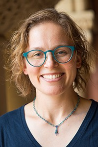

<table>
<tr>
  <td class="small">

<div class="header lead">
  Elena L. Glassman
</div>


<p class="boldish">Offical Bio</p>
<p>I design, build and evaluate systems for comprehending and interacting with population-level structure and trends in large code and data corpora. I am an Assistant Professor of Computer Science at the Harvard Paulson School of Engineering & Applied Sciences and the Stanley A. Marks & William H. Marks Professor at the Radcliffe Institute for Advanced Study, specializing in human-computer interaction. At MIT, I earned a PhD and MEng in Electrical Engineering and Computer Science and a BS in Electrical Science and Engineering. Before joining Harvard, I was a postdoctoral scholar in Electrical Engineering and Computer Science at the University of California, Berkeley, where I received the Berkeley Institute for Data Science Moore/Sloan Data Science Fellowship.</p>
<!-- <p> Elena Glassman is a the Stanley A. Marks and William H. Marks Assistant Professor at the Radcliffe Institute and a professor of computer science at the Harvard Paulson School of Engineering and Applied Sciences specializing in human-computer interaction. She designs, builds and evaluates systems for comprehending and interacting with population-level structure and trends in large code and data corpora.
</p>
<p>
Glassman earned a PhD and MEng in electrical engineering and computer science and a BS in electrical science and engineering from the Massachusetts Institute of Technology. Before joining Harvard, she was a postdoctoral scholar in electrical engineering and computer science at the University of California, Berkeley, where she received the Berkeley Institute for Data Science Moore/Sloan Data Science Fellowship.
</p> -->

<!-- <div class="header lead top-padding">
  Instructions for potential collaborators
</div>

<p>

<ul>
  <li><b>Students:</b> First, please <a href="https://gsas.harvard.edu/programs-of-study/divisions/school-engineering-and-applied-sciences">apply</a>! I cannot consider you unless you submit an application. The deadline is Dec 15th, 2021. Second, before reaching out directly to me, please skim the <a href="/index.html#publications">publications list</a> to see what we work on. Find some papers that look interesting and read their abstracts. Pick one paper and read it fully. If you’re still interested, send me an email telling me one thing you learned from the paper and one thing you would try if you were going to extend the work in a direction that excites you, and why. Title that email "Harvard SEAS HCI PhD Applicant."
</li>
  <li><b>Postdoc Applicants:</b> Please send me an e-mail with the subject line “Harvard SEAS Potential Postdoc Applicant.” In that email, let me know a little about yourself and your intentions to submit a job application. Then follow-up by submitting an <a href="https://academicpositions.harvard.edu/postings/10947">official application</a>.</li>
</ul>

</p> -->

<div class="header lead top-padding">
  <a href="Academic_CV.pdf">Curriculum Vitae</a>
</div>

<div class="header lead top-padding">
  Archive of Faculty Application Materials
</div>

<p>

<ul>
  <li><a href="facultymaterials/Glassman_Research_website.pdf">Research Statement</a></li>
  <li><a href="facultymaterials/Glassman_Teaching_website.pdf">Teaching Statement</a></li>
  <li><a href="facultymaterials/Glassman_Diversity_website.pdf">Diversity Statement</a></li>
</ul>

</p>

<!-- <div class="header lead top-padding">
  <a href="/mit-phd-thesis/">MIT EECS PhD Thesis Materials and Recording</a>
</div> -->

</td>
<td width="5px">
</td>
<td class="small" width="250px">

  

  <div class="box">
    <div class="header lead">
    Contact Information
    </div>

    <div class="margin-bottom">
      <div>
        glassman@seas.harvard.edu
      </div>
      <div>

                <!-- <p class="boldish">Office Hours</p>
                Maxwell-Dworkin Rm 241<br>
                <a href="https://calendar.google.com/calendar/selfsched?sstoken=UU5pdmMyN0ozcG1BfGRlZmF1bHR8YzM5MGNlYTBiZDkxODZjZWI0M2VkNWY3OGQ4N2JkMjk">Sign up for a 15 minute slot</a> -->

                <p class="boldish">Administrative Support</p>
                Susan Welby<br>Maxwell Dworkin 353<br>swelby@seas.harvard.edu
      </div>
    </div>
  </div>

    </td>
  </tr>
  </table>
